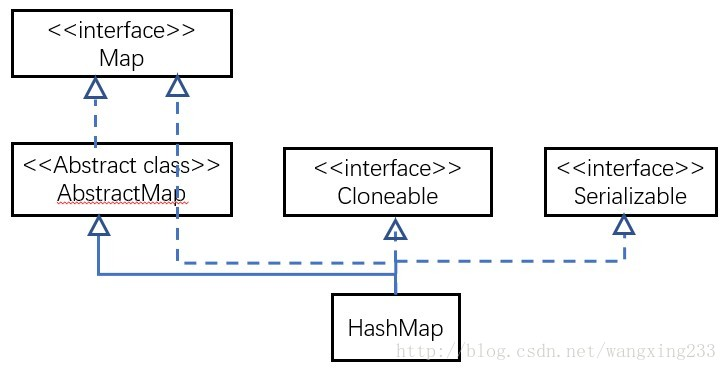
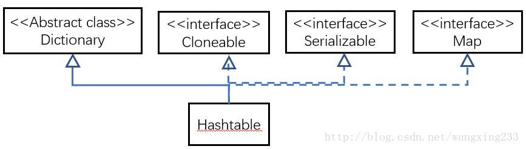
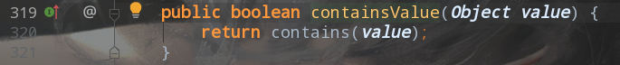
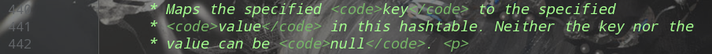
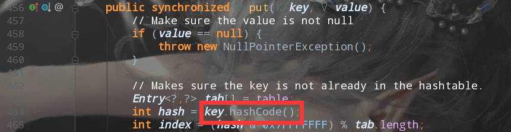
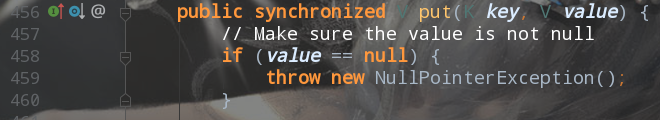

HashMap介绍
HashMap简介
是一个散列表，它存储的内容是键值对映射。
继承于AbstractMap，实现了Map、Cloneable、java.io.Serializable接口。
实现不是同步的，意味着它是线程不安全的。
key和value都可以为null。
映射不是有序的
HashMap的构造函数
默认构造函数
/**
* 构建一个新的空哈希表，具有默认初始容量（16），和负载系数（0.75）
*/
public HashMap() {
this.loadFactor = DEFAULT_LOAD_FACTOR; // all other fields defaulted
}
指定”容量大小”的构造函数
/**
* 使用指定的初始容量构建新的空哈希表和默认负载系数（0.75）
*
* @param 初始哈希表的容量
* @exception 非法参数异常，如果初始量过小或小于0
*/
public HashMap(int initialCapacity) {
this(initialCapacity, DEFAULT_LOAD_FACTOR);
}
指定”容量大小”和”加载因子”的构造函数
/**
* 使用指定的初始容量构建心的空哈希表，指定容量和指定的负载系数
*
* @param 初始哈希表的容量
* @param 负载系数
* @exception 非法参数异常，如果初始量或负载因子为非正数
*/
public HashMap(int initialCapacity, float loadFactor) {
if (initialCapacity < 0)
throw new IllegalArgumentException("Illegal initial capacity: " +
initialCapacity);
if (initialCapacity > MAXIMUM_CAPACITY)
initialCapacity = MAXIMUM_CAPACITY;
if (loadFactor <= 0 || Float.isNaN(loadFactor))
throw new IllegalArgumentException("Illegal load factor: " +
loadFactor);
this.loadFactor = loadFactor;
this.threshold = tableSizeFor(initialCapacity);
}
包含”子Map”的构造函数
/**
* 构建一个新的哈希表，其映射与给定的映射相同
* @param 默认负载系数（0.75）和初始容量能足以将映射保存到指定的map中
* @throws 如果指定的映射为空，则抛出异常
*/
public HashMap(Map<? extends K, ? extends V> m) {
this.loadFactor = DEFAULT_LOAD_FACTOR;
putMapEntries(m, false);
}
HashMap的API
void clear()//清空HashMap
Object clone()//
boolean containsKey(Object key)//判断HashMap是否包含key
boolean containsValue(Object value)//判断HashMap是否包含value
Set<Entry<K, V>> entrySet()//返回HashMap中所有Entry的集合
V get(Object key)//获取Key对应的value
boolean isEmpty()//判断HashMap是否为空
Set<K> keySet()//返回包含所有key的Set集合
V put(K key, V value)//通过key-value映射添加到HashMap中
void putAll(Map<? extends K, ? extends V> map)//将map的全部元素添加到HashMap中
V remove(Object key)//删除指定key的元素
int size()//返回HashMap的容量
Collection<V> values()//返回包含所有value的Collection集合，可使用Arraylist中的构造函数ArrayList(Collection<? extends E> c)
Hashtable介绍
Hashtable简介
是一个散列表，它存储的内容是键值对映射。
继承于Dictionary，实现了Map、Cloneable、java.io.Serializable接口。
实现是同步的，意味着线程是安全的。
key和value都不可以为null。
Hashtable的构造函数
默认构造函数
/**
* 构建一个新的空哈希表，具有默认初始容量（11），和负载系数（0.75）
*/
public Hashtable() {
this(11, 0.75f);
}
指定”容量大小”的构造函数
/**
* 使用指定的初始容量构建新的空哈希表和默认负载系数（0.75）
*
* @param 初始哈希表的容量
* @exception 非法参数异常，如果初始量过小或小于0
*/
public Hashtable(int initialCapacity) {
this(initialCapacity, 0.75f);
}
指定”容量大小”和”加载因子”的构造函数
/**
* 使用指定的初始容量构建心的空哈希表，指定容量和指定的负载系数
*
* @param 初始哈希表的容量
* @param 负载系数
* @exception 非法参数异常，如果初始量或负载因子为非正数
*/
public Hashtable(int initialCapacity, float loadFactor) {
if (initialCapacity < 0)
throw new IllegalArgumentException("Illegal Capacity: "+
initialCapacity);
if (loadFactor <= 0 || Float.isNaN(loadFactor))
throw new IllegalArgumentException("Illegal Load: "+loadFactor);
if (initialCapacity==0)
initialCapacity = 1;
this.loadFactor = loadFactor;
table = new Entry<?,?>[initialCapacity];
threshold = (int)Math.min(initialCapacity * loadFactor, MAX_ARRAY_SIZE + 1);
}
包含”子Map”的构造函数
/**
* 构建一个新的哈希表，其映射与给定的映射相同
* @param 将其映射放置在此map中，确保容量能满足给定的map中的容量及负载因子
* @throws 如果指定的映射为空，则抛出异常
* @since 1.2
*/
public Hashtable(Map<? extends K, ? extends V> t) {
this(Math.max(2*t.size(), 11), 0.75f);
putAll(t);
}
Hashtable的API
synchronized void clear()//清空Hashtable
synchronized Object clone()//复制
synchronized boolean containsKey(Object key)//判断Hashtable是否包含key
synchronized boolean containsValue(Object value)//判断Hashtable是否包含value
synchronized Set<Entry<K, V>> entrySet()//返回Hashtable中所有Entry的集合
synchronized V get(Object key)//获取Key对应的value
synchronized boolean isEmpty()//判断Hashtable是否为空
synchronized Set<K> keySet()//返回包含所有key的Set集合
synchronized V put(K key, V value)//通过key-value映射添加到HashMap中
synchronized void putAll(Map<? extends K, ? extends V> map)//将map的全部元素添加到HashMap中
synchronized V remove(Object key)//删除指定key的元素
synchronized int size()//返回Hashtable的键数量
synchronized Collection<V> values()//返回包含所有value的Collection集合，可使用Arraylist中的构造函数ArrayList(Collection<? extends E> c)
HashMap和HashTable的区别
作者不同
HashTable 的作者
* @author Arthur van Hoff
* @author Josh Bloch
* @author Neal Gafter
HashMap的作者
* @author Doug Lea
* @author Josh Bloch
* @author Arthur van Hoff
* @author Neal Gafter
产生时间
Hashtable是java一开始发布时就提供的键值映射的数据结构，而HashMap产生于JDK1.2。虽然Hashtable比HashMap出现的早一些，但是现在Hashtable基本上已经被弃用了。而HashMap已经成为应用最为广泛的一种数据类型了。造成这样的原因一方面是因为Hashtable是线程安全的，效率比较低。另一方面可能是因为Hashtable没有遵循驼峰命名法吧。。。
继承的父类不同
HashMap和Hashtable不仅作者不同，而且连父类也是不一样的。HashMap是继承自AbstractMap类，而HashTable是继承自Dictionary类。不过它们都实现了同时实现了map、Cloneable（可复制）、Serializable（可序列化）这三个接口


Dictionary类是一个已经被废弃的类（见其源码中的注释）。父类都被废弃，自然而然也没人用它的子类Hashtable了。
对外提供的接口不同
Hashtale比HashMap多提供了elments()和contains()俩个方法
elments()方法继承自HashTabke的父类Dictionary。elments()用于返回Hashtable中的value枚举
contains()方法判断该Hashtable是否包含传入的value。它的作用域containsValue()一致。事实上contansValue()就只是调用了一下contains()方法

对Null key和Null value的支持不同
Hashtable既不支持null key也不支持null value。Hashtable的put()方法的注释中有说明

当key为null的时候，调用put()方法，运行到红方块这步便会抛出空指针，因为拿了一个null去调用它的方法

当value为null时候，Hashtable对此进行了限制，调用便会抛出空指针异常

HashMap中，null可以作为主键，但是这样的主键只有一个；可以有一个或多个键的值为null。当调用get（）方法返回null值的时候，可能是HashMap中没有这个键，也可能是这个键的值是null。因此在HashMap中不能由get（）方法来判断HashMap中来判断是否有这个键，而应该使用containsKey（）来判断。
线程安全性不同
Hashtable是线程安全的，它的每个方法都加入了Synchronize方法。在多线程并发的环境下，可以直接使用Hashtable。不需要自己去写方法实现同步
HashMap是线程不安全的，在多线程并发的环境下，可能会产生死锁等问题；使用HashMap就需要自己增加同步处理。
虽然HashMap不是线程安全的，但是它的效率会比Hashtable要好很多。这样设计是合理的。在我们的日常使用当中，大部分时间是单线程操作。HashMap把这部分操作解放了出来。当需要多线程的操作时可以使用线程安全的ConcurrentHashMap。ConcurrentHashMap虽然也是线程安全的，但是它的效率比HashTable要高很多。因为ConcurrentHashMap使用了分段锁，并不会对整个数据进行锁定。
遍历方式的内部实现上不同
Hashtable和HashMap都使用了Iterator。但是由于历史原因，Hashtable还使用了Enumeration的方式
HashMap的Iterator是fail-fast迭代器。当有其他线程改变了HashMap 的结构（增加、删除、修改元素），就会抛出ConcurrentModificationException异常。不过，通过Iterator的remove（）方法移除元素啧不会抛出该异常。但是这并不是一个一定发生的行为，要看JVM。
JDK8之前的版本中，Hashtable是没有fast-fail机制的。在JDK8及以后的版本中 ，HashTable也是使用fast-fail的
初始容量大小和每次扩充容量大小的不同
Hashtable默认的初始大小为11，之后每次扩充，容量变为原来的2n+1（n为扩充次数）。
HashMap默认的初始化大小为16，之后每次扩充，容量变为原来的2倍。
创建时，如果给了初始的容量大小，那么Hashtable会直接使用你给定的大小，而HashMap会将其扩充为2的名幂次方大小。也就是说Hashtable会尽量使用素数、奇数。而HashMap则总是使用2的幂作为哈希表的大小
之所以有这样的不同，是因为Hashtable和HashMap设计时的侧重不同。Hashtable的侧重点是哈希的结果更加均匀，让哈希冲突减少。当哈希表的大小为素数时，简单的取模哈希的结果会更加均匀，而HashMap则更加关注哈希的计算效率问题。在取模计算时，如果模数是2的幂，那么我们可以直接使用位运算来得到结果，效率要大大高于做除法。HashMap为了加快哈希的速度，将哈希表的大小固定了为2的幂。当然这引入了哈希分布不均匀的问题，所以HashMap为解决这问题，又对hash算法做了一些改动。这从而导致了Hashtable和HashMap的计算hash值的方法不同
计算哈希值的方法不同
为了得到元素的位置，首先需要根据元素的KEY计算出一个hash值，然后在用这个hash值来计算得到最终的位置。
Hashtable直接使用对象的hashCode。是JDK根据对象的地址或者字符串或者梳子算出来的int类型的数值。然后再使用除留余数发来获得最终的位置。
Hashtable在计算元素的位置时需要进行一次除法运算，而除法运算是比较耗时间的。
HashMap为了提高计算效率，将哈希表的大小固定为2的幂，这样在取模运算时，不需要做除法，只需要做位运算。位运算比除法的效率要高很多。
HashMap的效率虽然提高了，但是hash冲突却也增加了。因为它得出的hash值在低位相同的概率比较高，而为了解决这个问题，HashMap重新根据hashCode计算hash值后，又对hash值做了一些运算来打散数据。使得取得的位置更加分散，从而减少了hash冲突。为了高效，HashMap只做了一些简单的位处理。从而不至于把使用2的幂次方带来的效率给抵消掉